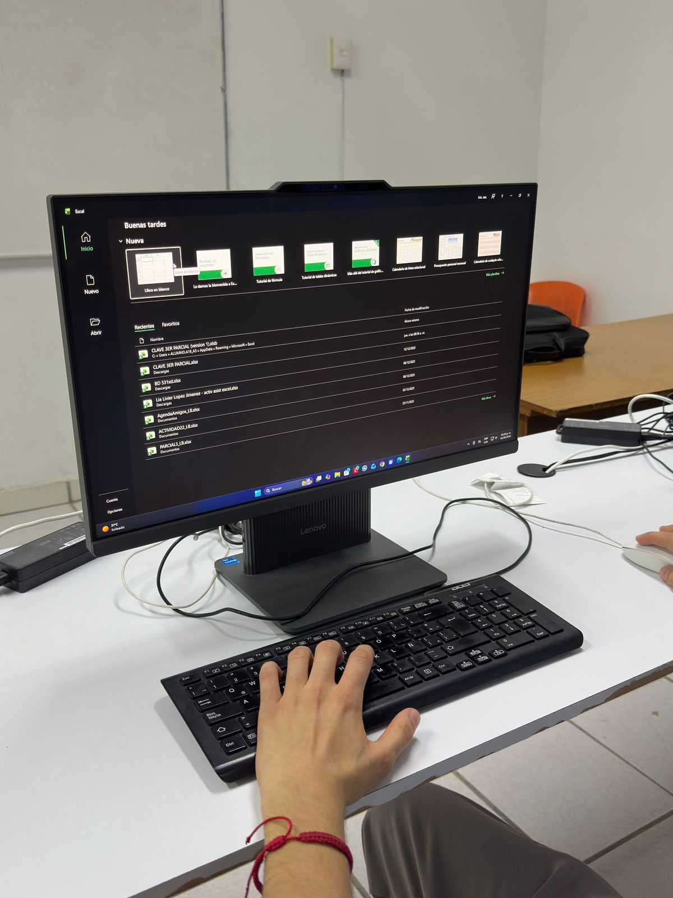

Aprende herramientas digitales utilizadas en escuelas, oficinas y empresas modernas. Conoce funciones de Word para documentos y utiliza Excel para tablas, fórmulas, gráficas y organización de información.

Desarrolla la capacidad de analizar problemas y crear soluciones de manera estructurada utilizando el pensamiento lógico y computacional. Aprenderás a diseñar algoritmos, interpretar diagramas de flujo y comprender cómo funcionan los procesos detrás de las aplicaciones y sistemas informáticos.
Aprende a crear, editar y dar formato a documentos profesionales utilizando una de las herramientas más importantes del entorno académico y laboral. Conocerás funciones esenciales como la edición de texto, uso de estilos, tablas, imágenes, encabezados, pies de página, listas, referencias y herramientas de revisión.